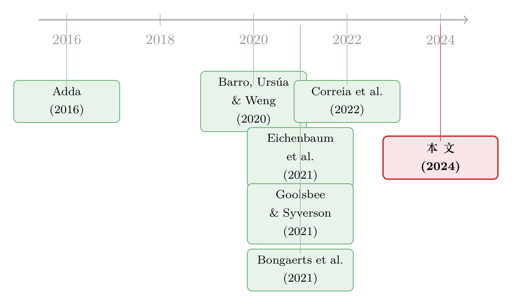

停业这本账：一场大流行里，关店的代价究竟落在谁头上
本文读的是 Barrot, Bonelli, Grassi & Sauvagnat (2024, Journal of Financial Economics)：他们手工整理了美国各州「关停非必要营业」的行政命令，用同一家公司、同一个行业在不同州被关停程度的差异作识别，算出强制停业给企业和工人造成了多大损失、又救回了多少条人命。最反直觉的一笔是——这笔经济损失里，大约三分之二由企业的利润吃下，只有三分之一落在工人的工资上。换句话说，在那场灾难里，是老板在替员工扛雷。
1 一个无法回避的问题
2020 年的春天，美国发生了一件几乎没有先例的事：在短短三周之内，45 个州先后签署行政命令（Executive Order），勒令被认定为「非必要（non-essential）」的营业场所关闭其线下运营。从加州（3 月 19 日）到密苏里州（4 月 6 日），一道道命令落下，餐馆只能外卖、商场拉下卷帘门、理发店熄灯。
这件事本身并不新鲜——人类对付传染病，自古就靠「隔离」二字。新鲜的是它的代价第一次摆在了我们面前：当一个国家亲手按下经济的暂停键，到底付出了多少？又换回了什么？
这看起来像一个简单的会计问题，其实步步是坑。
先看一个最朴素的疑问：强制停业，真的让企业受损了吗？听上去这还用问？但仔细想想并不显然。一种声音会说：就算政府不下令，需求也已经因为恐慌而崩塌，店关不关都没人来，命令不过是给一个本就要发生的结局盖了个章；更何况，很多工作可以靠居家办公（work-from-home）来对冲，真正「被关掉」的产出也许没那么多。如果这些说法成立，那么强制停业的因果效应可能小得可以忽略。
于是，第一步必须把「政府这道命令」的效应，从「需求崩塌」「居家办公」「人们自发减少外出」这一大堆同时发生的事情里，干干净净地剥离出来。这正是这篇论文最硬的功夫所在。
2 识别策略：在同一家公司、同一个行业内部做比较
强制停业最大的麻烦，是它不是随机的。疫情更重的州，可能关得更狠、执行得更严；预期经济冲击小的州，也可能更舍得关。如果直接拿「关得狠的州」和「关得松的州」比，你比的根本不是停业的效应，而是这些州本身的差异。这就是内生性（endogeneity）。
作者破局的办法，是把比较彻底地搬进同一个州、同一个行业的内部。
关键的原材料，是一个此前没人做过的数据库。作者逐字读完了每个州的行政命令，识别出哪些 4 位 NAICS 行业、在哪个州、从哪天起、到哪天止被强制关停线下运营，搭出一张「州 × 行业 × 周」的关停面板。论文坦言，光是把这张表建出来，本身就是一项贡献——据他们所知，这是第一个在「4 位行业 × 州」颗粒度上记录「某行业在某州何时被行政关停」的数据库。
有了这张表，每家公司的「受限劳动占比（share of restricted labor）」就能算出来：一家公司有多少比例的员工，因为其所在州关停了其所在行业的线下运营而无法工作；再用这部分人里能够居家办公的比例打个折扣。直觉上，它衡量的是「这家公司有多少劳动力，被这道命令实打实地按住了」。
用一条式子把这个构造写出来，大致是：
$$ RL_{f} = \sum_{i,s} \omega_{f,i,s}\,\big(1 - \theta_{i}\big)\,Closed_{i,s} $$
其中 \(\omega_{f,i,s}\) 是公司 \(f\) 在行业 \(i\)、州 \(s\) 的就业权重，\(Closed_{i,s}\) 是该州是否关停该行业的虚拟变量，\(\theta_{i}\) 是该行业可居家办公的比例（沿用 Dingel & Neiman 2020 的行业居家办公测度）。一家横跨多州、多行业经营的公司，正因为它的业务版图不同，受到的「关停冲击」就不同——而这份不同，恰恰不由它自己决定，而由各州政府的笔决定。
真正关键的一步，在于固定效应（fixed effects）的设计。估计企业利润时，作者跑的是公司 × 季度层面的面板回归：
读懂这三组固定效应，就读懂了整篇论文的识别。州 × 季度 把「这个州这季度发生的一切」都吸走了——包括疫情本身、stay-at-home order、人们自发的躲避。行业 × 季度 又把「这个行业这季度的整体景气」吸走了。剩下能驱动 \(\beta\) 的，只能是这样一种比较：同一个季度、同一个州里，两家行业暴露不同的公司；或者同一个季度、同一个行业里，业务恰好落在关停程度不同的州的两家公司。需求崩塌、恐慌避险这些「以州为单位」「以行业为单位」发生的事，都被固定效应吃干净了。\(\beta\) 捕捉的，就是行政命令本身那一刀。
接着，一个自然的问题是：这种比较可信吗？平行趋势（parallel trends）站得住吗？作者的回答很干脆——他们在停业开始之前，找不到任何这样的效应。利润也好、工资也好，都是在限制令落地的那一周才开始往下掉，之前没有任何先行趋势。这正是平行趋势假设该有的样子。
3 第一笔账：企业和工人，各自损失了多少
现在可以算账了。
利润这一栏。在控制了公司、州 × 季度、行业 × 季度固定效应后，受限劳动占比为 10% 的公司，季度资产收益率（return on asset, ROA）下降约 0.16 个百分点。别小看这个数：样本里季度 ROA 的均值也才 1.5%，0.16 个百分点意味着盈利能力被削掉了一成上下。而且，这个下降在停业开始之前完全看不到。
利润掉了，是暂时的还是永久的？会不会之后「报复性」补回来？作者用股价又验了一道：他们计算行政命令签发日前后的日度股票收益，比较同一个州（或同一个行业）但停业暴露不同的公司。结果是，命令一宣布，受冲击更大的公司市值显著下跌，而且效应集中在公告前后那个很短的事件窗口里。市场没有把它当成一次能很快抹平的扰动，而是当成了对公司价值的真实减记。
工资这一栏。这里作者换了一套数据：来自 Homebase（一家给小企业提供排班和打卡工具的公司）的高频数据，能精确到「门店—工人—天」，再汇总到「通勤区（commuting zone, CZ）× 周」。在 CZ × 周的面板里，加上 CZ 和州 × 周固定效应，结论是：受限劳动占比每上升 10 个百分点，当地总工资下降约 9%。同样，工资是在限制令落地的那一周开始掉，之前没有先行趋势。
到这里，故事本可以收尾了——停业确实代价不菲。但真正精彩的反转，藏在「这两栏怎么加起来」里。
4 反转：原来是企业在替工人扛雷
把微观估计外推到全国，作者得到两个总量：
- 企业利润收缩约
$359十亿美元（95% 置信区间$51–$667十亿）； - 劳动收入收缩约
$173十亿美元（95% 置信区间$31–$314十亿）。
现在做一道小学算术：\(359 / (359+173) \approx 2/3\)。停业的总代价里，大约三分之二压在了企业的利润上，只有三分之一落在工人的工资上。
为什么说这是反转？因为它和你的直觉是拧着的。在美国，劳动收入占增加值的份额（labor share）大约是 60%。如果停业的冲击在企业和工人之间「按比例分摊」，那工人本该承担六成左右的损失。可实际上工人只承担了三分之一。这中间的差额去哪了？被企业的利润吸收了。
这正是这篇论文我认为最有「金融味」的一笔：它把一场公共卫生事件，读成了一份风险分担（risk-sharing）合约。企业相对于工人，更有能力（也更有动机）去平滑这种暂时的冲击——靠现金缓冲、靠负债、靠不裁员。于是当灾难落下，是雇主先用自己的利润垫了一道，部分地为工人提供了保险。停业的痛，被悄悄地从工资条转移到了利润表上。
这个结论之所以能成立，全靠前面那套「把命令的效应单独剥出来」的识别——只有当你确信测到的是停业本身、而不是各州各行业的杂音时，「三分之二 vs 三分之一」这道比例才有意义。（关于企业在危机中如何主动腾挪以减震，可参见《先举手的人：危机里，「主动适应」到底值多少钱？》；而从小企业主消费的角度看营收冲击的传导，可参见《生意垮了一半，日子却照过：营收每损失一块钱，老板只省下 1.6 美分》。）
5 第二笔账：救回了多少条命
代价算清了，下半本账是收益——停业到底救了人没有？
这一步更难。要测停业对感染和死亡的因果效应，你得把它从所有别的政策（口罩令、居家令）、所有的行为变化里隔出来，还得把传染病的传播动态考虑进去：今天少感染一个人，会顺着传播链在未来少感染一串人。
作者沿用了一个与 SIRD（susceptible-infectious-recovered-deceased，易感—感染—康复—死亡）流行病学模型相容的实证设定，在回归里控制滞后的累计感染数，来捕捉这种传播动态。识别仍然落在 CZ 层面的「受限劳动占比」差异上。几个核心结果：
- 死亡率：受限劳动占比提高 10 个百分点并维持一周，新冠死亡率下降约
0.002个百分点。引入社会人口与公共卫生控制变量后系数稳定；停业之前同样没有任何先行趋势。 - 跨区无外溢：作者特意检验了健康结果在 CZ 之间是否相互「漏出」，结论是几乎没有——这反过来证明分析放在 CZ 层面是合适的，没有把别处的效应错算进来。
- 住院：受限劳动占比每升 10 个百分点，每周每万人新增住院数下降约
0.9例。 - 心理健康：但停业也有代价——焦虑、担忧、情绪低落、对事物失去兴趣这些坏心理健康症状，与停业显著正相关。这是一笔必须计入的「负收益」。
再往前一步，作者把视野从「新冠死亡」扩展到「总的、与新冠无关也算上的预期寿命」。他们从 CDC 县级死亡统计里取月度死亡数据（含死者年龄、性别），配上按性别和年龄的精算寿命表，构造出「CZ × 月」层面的损失寿命年（years of life lost）。结果：受限劳动占比提高 10 个百分点，每月每万人损失的寿命年减少约 16.8 年；而被救回一条命的人，平均多活了约 13 年——这个数字低于总人口的预期余命，恰恰印证了一个朴素的事实：被救下的人，平均而言年纪偏大。
6 两本账怎么对：诚实地承认「算不清」
到了最后一步——把成本那本账和收益那本账摆到一起。
作者用「损失寿命年」乘以各种「一个生命年的价值（value of a life-year）」的假设，再配上点估计周围的置信区间，去回答那个终极问题：停业的收益，到底有没有超过它的成本？
从 SIRD 模型外推，第一波疫情期间强制停业大约救回了 810 万个质量调整生命年（quality-adjusted life years, QALY）（95% 置信区间 200 万–1400 万）。若改用不控制滞后感染的线性模型，这个数字会低很多——约 320 万 QALY（区间 50 万–580 万）。
这里作者的克制值得敬佩。他们的结论不是一句响亮的「值」或「不值」，而是：
从 SIRD 模型的点估计看，健康收益的货币价值与停业的经济成本是同一量级，并常常超过它。但是——估计的不确定性太大，再加上线性设定给出的偏低结果，统计上无法拒绝「停业造成了净损失」这一可能。换言之，账面上看停业很可能划算，但我们没有底气在统计意义上把「不划算」彻底排除。
而且作者反复强调：这是一份事后（ex post）的成本收益分析，绝不该被解读成决策者在 2020 年那个春天面对的事前（ex ante）抉择——当时关于病毒本身、关于停业的经济后果，都笼罩在巨大的不确定性里。事后算账的价值，不在于给当年的决策打分，而在于第一次把这种「史无前例的政策」的代价称出重量、看清它在企业和工人之间如何分配。
故事还有一个尾声，关乎「能不能更省」。停业对健康的好处，理应在职场互动越密集的地方越大。作者据此把公司和 CZ 按「职场互动强度」的中位数一切两半：停业对利润和工资的打击在两组里差不多，但对健康的好处几乎全部集中在职场互动强度高于中位数的那一组。这意味着——同样多的生命年，本可以用更低的经济代价救回来，只要把限制更精准地瞄向那些职场互动密集的地区。
7 文献脉络
把这篇论文放回它的来路，是一条「从历史疫病、到新冠、再到精细化测量」的线。
最早，Adda (2016) 用法国关闭学校、停运公共交通的高频数据，研究各种病毒的传播与相应的经济代价——这是「用准实验测非药物干预」的方法论源头。往前追到 1918 年大流感，Barro, Ursúa & Weng (2020) 估出了 2% 的死亡率和三年里 6% 的人均 GDP 累计损失；Correia et al. (2022) 则发现 1918 大流感让各州制造业产出在四年内下跌 18%，且社会隔离政策对未来经济反而有正面作用。有意思的是，本文的结论与之相反——它发现社会隔离对经济有显著的负面效应。作者把这个差异归因于一个关键史实：1918 年的应对里，并不包含强制停业。

到了新冠，证据一度是混乱的。Baek et al. (2021) 和 Goolsbee & Syverson (2021) 都发现居家令（stay-at-home order）对失业申请和消费者行为的因果影响有限；本文则在「强制停业」这个更具体的政策上，记录到了显著的经济代价。在健康那一侧，Bongaerts et al. (2021)、Borri et al. (2021) 等研究了意大利停业对死亡的影响；本文的独特之处，是把经济与健康两本账放进同一个框架里，并第一个估出非药物干预对企业利润的冲击。
它还接上了另一条线：宏观—流行病学模型。Eichenbaum, Rebelo & Trabandt (2021)、Acemoglu et al. (2021)、Alvarez et al. (2021) 等把传染模型嵌进宏观模型来求最优封锁；Hall et al. (2020) 和 Greenstone & Nigam (2020) 则要对「一条命值多少钱」做假设，来算出社会最优的隔离力度。本文这份事后的成本收益估计，恰好为这些模型里的关键假设提供了一个可对照的经验基准。而它自己用的「生命年定价」，则承自 Ashenfelter & Greenstone (2004) 这一脉对统计生命价值（value of a statistical life）的测量传统。
8 评论与延伸（Q&A + 研究方向）
(a) 几个可能的疑问
Q：固定效应吸走了那么多东西，剩下的变异还够识别吗？会不会把真效应也吸没了？
这正是这种设计的取舍。
州 × 季度和行业 × 季度确实很「贪」，但作者依赖的是跨行业 × 跨州的交互变异：同一州里不同行业被关的程度不同，同一行业在不同州被关的程度不同。只要各州关停清单足够参差（论文显示各州对「必要/非必要」的界定差异很大），这份交互变异就足够。代价是 \(\beta\) 识别的是「相对」效应，绝对量级靠外推补齐。
Q：用 Compustat 上市公司测利润、用 Homebase 小企业测工资，两套样本对不上，外推可信吗？
这是合理的担忧。Homebase 偏重零售、餐饮、住宿等小企业，既不代表行业分布、也不代表企业规模分布。作者的应对是：用 County Business Patterns (CBP) 2019 的行业份额对 Homebase 重新加权，并用 BLS 就业数据做稳健性检验。但「上市公司利润 + 小企业工资」拼出的全国总量，确实是把两块不同的拼图拼在一起，「三分之二 vs 三分之一」这个比例应被理解为量级而非精确数。
Q：「企业承担三分之二」会不会只是会计幻觉——利润本来就是个余项（residual），需求一掉它当然先掉？
部分是、但不全是。利润作为余项，对冲击天然更敏感，这点没错。但论文的论证不止于此：工资在停业那一周才开始掉、之前无趋势，说明掉的工资确实是停业造成的；而企业并没有把成本足额转嫁到裁员/降薪上（否则工人就该承担更高比例）。「企业吸收了超过其份额的损失」这个结论，依赖的是工资下降幅度小于劳动份额所隐含的幅度——这是一个实证事实，不只是会计恒等式。
Q：股价那一段，怎么排除是「整个市场在跌」而不是停业公告？
靠事件研究的横截面比较：在同一个州（或同一个行业）里，比较停业暴露不同的公司在行政命令签发日附近的日度收益。整个市场的下跌是共同的，会被这种相对比较差掉；而效应又集中在公告前后的短窗口，进一步指向是「这条命令」而非弥漫性的市场恐慌。
Q：健康收益的「跨区无外溢」检验，真的能保证 CZ 是对的分析单元吗？
它提供了重要但非决定性的支持。若停业在 A 区压低了感染，却通过人口流动把效应漏到了相邻 B 区，那么单看 A 区会低估真实效应。作者发现健康结果在 CZ 间几乎无外溢，说明在第一波、人口大幅减少流动的背景下，CZ 这个尺度大致能「装下」一道完整的效应。但这是第一波的特例，换一个流动性更强的时期未必成立。
Q：既然点估计显示「大致划算」，为什么不能下「停业值得」的结论？
因为不确定性。健康收益的置信区间很宽（QALY 从 SIRD 的 200 万–1400 万，到线性模型的 50 万–580 万），生命年定价又得靠假设。点估计落在「收益 ≈ 或 > 成本」一侧，但区间宽到无法在统计上拒绝「净损失」。作者的诚实恰恰在于：承认账面占优，但拒绝把「占优」说成「确定」。
(b) 几个可能的研究问题与提案
1. 停业冲击如何顺着公司的「债权人」传导？
【经济故事】本文说企业用利润替工人扛了三分之二的雷。但企业的损失不会停在利润表——它会传到债券持有人、银行授信、信用利差上。一个自然的问题是：受限劳动占比高的公司，其公司债利差在停业窗口扩大了多少？谁（企业 / 工人 / 债权人）最终是这条风险分担链的「最后一环」？ 【可行性】高。把本文的「公司 × 受限劳动占比」直接并到 TRACE 公司债成交数据，做事件窗口内的利差回归即可，识别逻辑可沿用本文的州 × 行业固定效应。数据与方法都现成。
2. 外资持有人会不会改变企业「替员工扛雷」的能力？
【经济故事】企业能为工人提供多少保险，取决于它的财务韧性，而股东结构会影响这一点：外资机构持股高的公司，是更愿意（耐心资本、长期视角）还是更不愿意（要求即时回报、危机中撤离）在停业冲击下保住就业、垫付利润？这把本文的风险分担问题接到了所有权结构上。 【可行性】中。需要把 13F / FactSet 的机构（含外资）持股并到本文样本，按外资持股比例分组比较利润 vs 工资的承担比例。难点在于外资持股本身的内生性，需要用指数纳入等外生冲击做工具。
3. 停业的流动性代价：被关停行业的企业，现金缓冲是怎么被消耗的？
【经济故事】「企业吸收三分之二损失」的背后，是企业在烧自己的流动性。哪种企业撑得住？现金多、授信额度足、负债低的公司，是否更能把工资稳住、把损失留在利润里？这能把「风险分担」进一步拆成「谁有弹药做保险」。 【可行性】高。Compustat 季度数据里现金、短期债务、未动用授信都有，与本文受限劳动占比做交互回归即可，识别框架照搬本文。
4. 把「精准关停更省」的反事实做成结构化的最优政策。
【经济故事】本文已指出，同样的生命年，若把限制瞄准职场互动密集的 CZ，本可用更低经济代价救回。下一步是把这个洞见结构化：给定本文估出的成本曲线和收益曲线，求解「在预算约束下最大化生命年」的最优关停清单，并和各州实际清单对比，量出「政策低效」的规模。 【可行性】中。成本与收益的弹性都来自本文估计，最优化是规划问题；难点是行业间的一般均衡溢出（关一个行业会冲击上下游），需要接上投入产出网络（作者在 Barrot et al. 2021 里已有此类网络模型可借）。
9 我的判断
这篇论文最大的贡献，是把一件「人人都在争论、却没人量过」的事，第一次老老实实地称出了重量——尤其是那张「州 × 4 位行业 × 周」的关停数据库，本身就是会被后人反复使用的公共品。而「企业吃下三分之二、工人只担三分之一」这个发现，把一场公共卫生事件翻译成了一份风险分担合约，是我读到的、把宏观灾难讲出微观金融含义的最漂亮的一笔。它的克制同样可贵：在成本收益的终点，作者没有为了一个响亮的结论牺牲诚实。
对识别，我的担忧有二。其一是外推的拼接：利润来自上市公司、工资来自小企业，两套样本的代表性不同，「三分之二」这道比例应被读作量级而非精确数。其二是总量层面的一般均衡：微观回归靠固定效应吸走了共同冲击，但把系数乘到全国时，被关行业对上下游的网络溢出、消费者在行业间的替代，都可能让真实总量偏离线性外推——而这恰恰是固定效应「看不见」的部分。
后续我最想看到的，是把这条风险分担链拉得更长：从工资、到利润、到债权人、到股东结构。本文回答了「停业的账由企业还是工人买单」，而下一个问题是——当企业替工人扛下这笔雷，它自己又是靠谁、靠什么扛住的。顺着信用市场和所有权结构追下去，也许能看到这场风险，最终是怎样在整个金融体系里被一层层传递、稀释、再定价的。
参考文献
Acemoglu, D., Chernozhukov, V., Werning, I., Whinston, M.D. (2021). Optimal targeted lockdowns in a multigroup SIR model. American Economic Review: Insights 3(4), 487–502.
Adda, J. (2016). Economic activity and the spread of viral diseases: evidence from high frequency data. Quarterly Journal of Economics 131(2), 891–941.
Alvarez, F., Argente, D., Lippi, F. (2021). A simple planning problem for COVID-19 lockdown, testing, and tracing. American Economic Review: Insights 3(3), 367–382.
Ashenfelter, O., Greenstone, M. (2004). Using mandated speed limits to measure the value of a statistical life. Journal of Political Economy 112(S1), S226–S267.
Baek, C., McCrory, P.B., Messer, T., Mui, P. (2021). Unemployment effects of stay-at-home orders: evidence from high-frequency claims data. Review of Economics and Statistics 103(5), 979–993.
Barro, R.J., Ursúa, J.F., Weng, J. (2020). The Coronavirus and the Great Influenza Pandemic: Lessons from the "Spanish Flu" for the Coronavirus's Potential Effects on Mortality and Economic Activity. Working Paper.
Barrot, J.N., Grassi, B., Sauvagnat, J. (2021). Sectoral effects of social distancing. AEA Papers and Proceedings 111, 277–281.
Bongaerts, D., Mazzola, F., Wagner, W. (2021). Closed for business: the mortality impact of business closures during the COVID-19 pandemic. PLoS ONE 16(5), 1–17.
Dingel, J.I., Neiman, B. (2020). How many jobs can be done at home? Journal of Public Economics 189, 104235.
Ding, W., Levine, R., Lin, C., Xie, W. (2021). Corporate immunity to the COVID-19 pandemic. Journal of Financial Economics 141(2), 802–830.
Eichenbaum, M.S., Rebelo, S., Trabandt, M. (2021). The macroeconomics of epidemics. Review of Financial Studies 34(11), 5149–5187.
Goolsbee, A., Syverson, C. (2021). Fear, lockdown, and diversion: comparing drivers of pandemic economic decline 2020. Journal of Public Economics 193, 104311.
Gormsen, N.J., Koijen, R.S.J. (2020). Coronavirus: impact on stock prices and growth expectations. Review of Asset Pricing Studies 10(4), 574–597.
Greenstone, M., Nigam, V. (2020). Does Social Distancing Matter? Working Paper.
Hall, R.E., Jones, C.I., Klenow, P.J. (2020). Trading off consumption and COVID-19 deaths. Quarterly Review 42(1), 1–14.